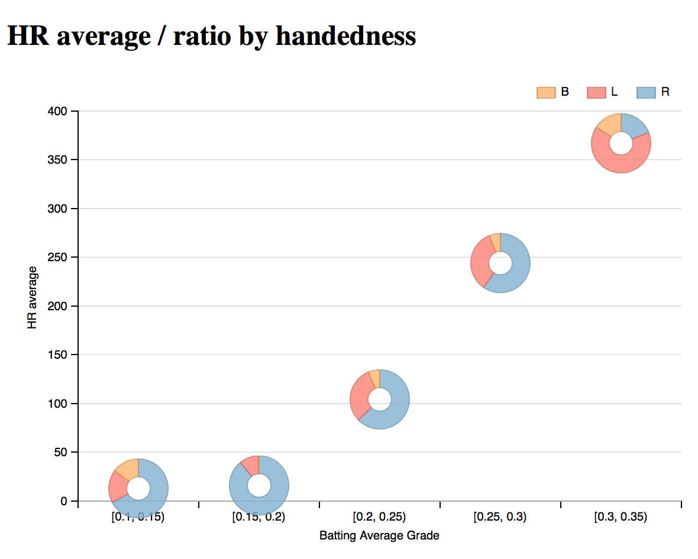

Data Visualization: Baseball Data
by Yoon-gu Hwang, November 22, 2015
Summary
This dataset about information of baseball players. It includes player's name, handedness (right, left handed, or both), height, weight, batting average, and the number of home runs.
I noticed that there was a relation between batting average, avg and home runs, HR.
Players with better avg tends to hit more home runs than lower avg players.
In addition, I heard that many great hitters were left-handed. In my visualization, it turns out that there is pretty high home run ratio of left-handed among top batting average players.
Design
Exploratory Data Analysis using Python
I downloaded baseball_data.csv the dataset from data set options page given by Udacity. The dataset had player's physical information(name, height, weight) and performance information(avg, HR).
| height | weight | avg | HR | |
|---|---|---|---|---|
| count | 1157.000000 | 1157.000000 | 1157.000000 | 1157.000000 |
| mean | 72.756266 | 184.513397 | 0.186793 | 45.359551 |
| std | 2.142272 | 15.445995 | 0.106175 | 74.065110 |
| min | 65.000000 | 140.000000 | 0.000000 | 0.000000 |
| 25% | 71.000000 | 175.000000 | 0.138000 | 1.000000 |
| 50% | 73.000000 | 185.000000 | 0.238000 | 15.000000 |
| 75% | 74.000000 | 195.000000 | 0.258000 | 55.000000 |
| max | 80.000000 | 245.000000 | 0.328000 | 563.000000 |
There are 1157 players' records. Interestingly, some players have zero batting average or home runs, so I removed those rows.
| height | weight | avg | HR | |
|---|---|---|---|---|
| count | 871.000000 | 871.000000 | 871.000000 | 871.000000 |
| mean | 72.338691 | 182.846154 | 0.244201 | 60.253731 |
| std | 1.935478 | 14.971904 | 0.030703 | 79.940631 |
| min | 65.000000 | 140.000000 | 0.104000 | 1.000000 |
| 25% | 71.000000 | 170.000000 | 0.232000 | 11.000000 |
| 50% | 72.000000 | 180.000000 | 0.248000 | 27.000000 |
| 75% | 74.000000 | 193.000000 | 0.263000 | 78.000000 |
| max | 80.000000 | 230.000000 | 0.328000 | 563.000000 |
After cleaning meaningless rows, I had 871 records. Now I wanted to figure out player's performance with different handedness and avg_category. I showed histogram, HR vs. avg_category with 3 types of handedness.
I used pandas.cut to split avg to 5 grades from 0.1 to 0.35.
| avg_category | handedness | HR |
|---|---|---|
| [0.1, 0.15) | B | 9 |
| L | 11 | |
| R | 41 | |
| [0.15, 0.2) | B | 2 |
| L | 32 | |
| R | 279 | |
| [0.2, 0.25) | B | 904 |
| L | 4449 | |
| R | 9020 | |
| [0.25, 0.3) | B | 2268 |
| L | 12591 | |
| R | 21861 | |
| [0.3, 0.35) | B | 160 |
| L | 660 | |
| R | 194 |
For unbalanced population, I needed to normalize values. So I added HR_ratio that is divided by subtotal HR sum for each handedness group.
| avg_category | handedness | HR | HR_partial sum | HR_ratio |
|---|---|---|---|---|
| [0.1, 0.15) | B | 9 | 61 | 0.147541 |
| [0.1, 0.15) | L | 11 | 61 | 0.180328 |
| [0.1, 0.15) | R | 41 | 61 | 0.672131 |
| [0.15, 0.2) | B | 2 | 313 | 0.006390 |
| [0.15, 0.2) | L | 32 | 313 | 0.102236 |
| [0.15, 0.2) | R | 279 | 313 | 0.891374 |
| [0.2, 0.25) | B | 904 | 14373 | 0.062896 |
| [0.2, 0.25) | L | 4449 | 14373 | 0.309539 |
| [0.2, 0.25) | R | 9020 | 14373 | 0.627566 |
| [0.25, 0.3) | B | 2268 | 36720 | 0.061765 |
| [0.25, 0.3) | L | 12591 | 36720 | 0.342892 |
| [0.25, 0.3) | R | 21861 | 36720 | 0.595343 |
| [0.3, 0.35) | B | 160 | 1014 | 0.157791 |
| [0.3, 0.35) | L | 660 | 1014 | 0.650888 |
| [0.3, 0.35) | R | 194 | 1014 | 0.191321 |
Data Visualization using dimple.js
Here is my initial visualization graph. I chose avg_category for x-axis, and HR_ratio for y-axis. And I have 3 groups visualization, such as R, L, and B
- I chose
avg_categoryas categorical variable, so I can simplify the visualization helping views recognize their performance. Expressingavgas 5-graded levels is better than a value. - Bar chart is simple and powerful tool to compare a certain quantity. All we have to do is just looking around target bar plot. It could be easily figured out that which one is higer value.
- For people who want to know the exact value of
HR_ratio, I used dimple.js to get hovering/tooltip function. - I used different colors for
handedness, because I want to verify the ratio of handedness. Coloring is very effective way to show different groups data.

Feedbacks
I shared my initial plot with my friends. I showed it to a friend in person. Also, I shared my webserver link to others.
Interview 1
Your graph on the baseball record is interesting. But when I saw for the first time, I did not recognize at a glance what a graph is about. Perhaps, x-axis and y-axis label name seems to be important. In addition, if the short title could show about the contents of the graph, it would be great.
Interview 2
I recommend a pie chart showing the hit ratio. The pie chart is a very effective way to show the occupation state for some quantity.
Interview 3
The home run ratio with the handedness is impressive. I'm wondering one morething when I look this graph. The average number of home runs will be good index for figuring out difference between 3 handedness groups.
Post-feedback Design
I made the follwing changes as reaction to feedbacks from my firends.
- I added short title to convey my discovery from this baseball dataset.
xandyaxes' labels are also included properly. - Also, I changed my plot to pie plot to show the home run ratio among
handedness. - From baseball dataset, I computed mean of homerun for each group, and set that variable to
y-axis.

From this graph, the fact that the higher batting average, the more player's HRs. In addition, left-handed players are especially noticed among top players(high batting average).
Resources
Data
-
data/baseball_data.csv: the original dataset -
data/cleaned_baseball.csv: grouped and merged dataset by me.